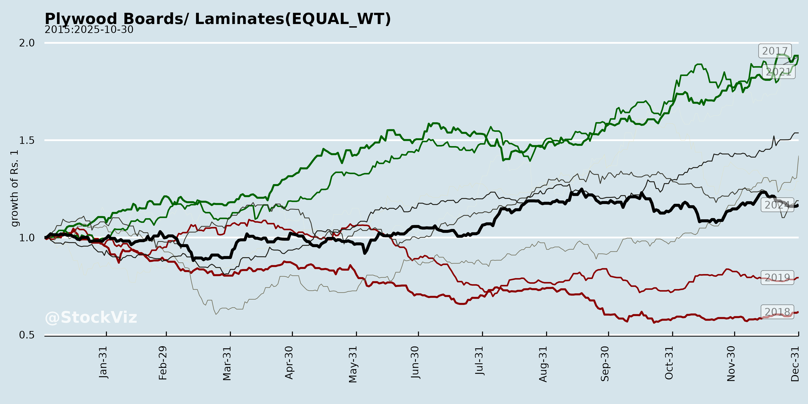
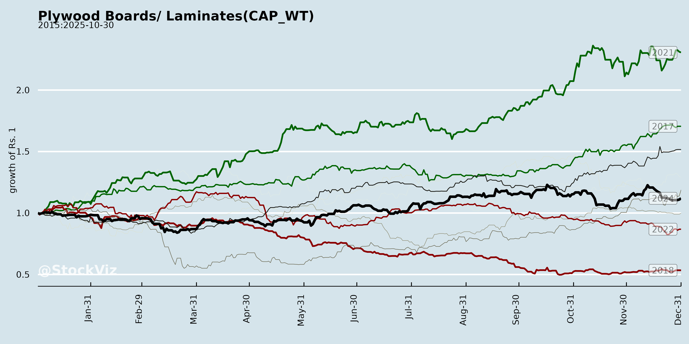
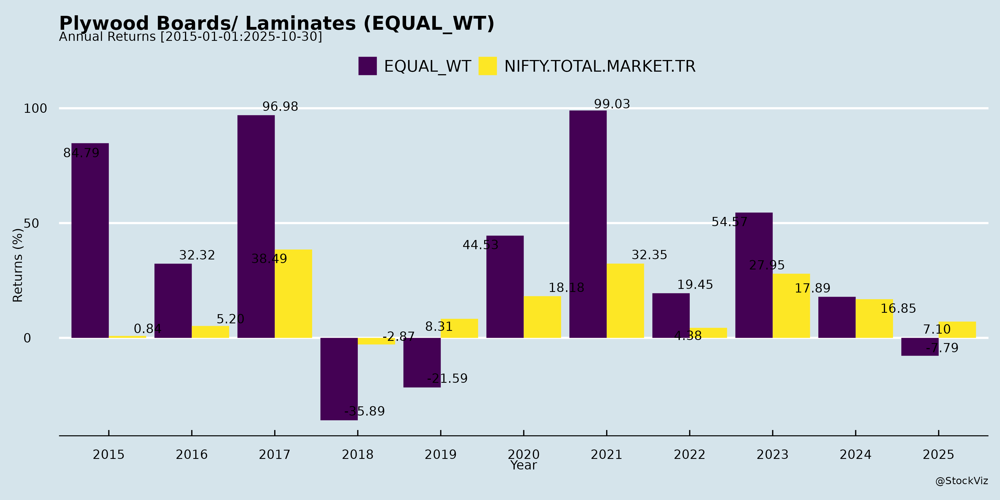
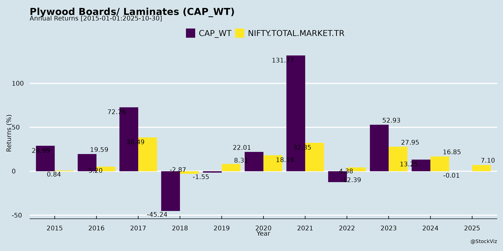
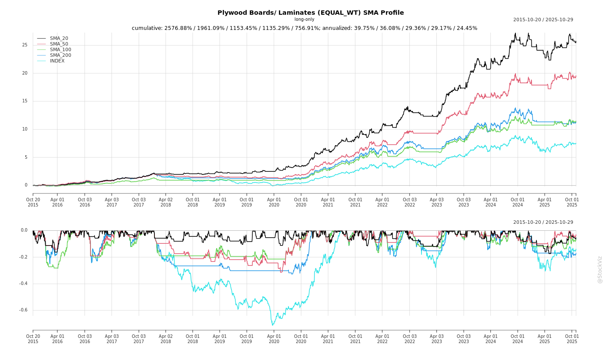
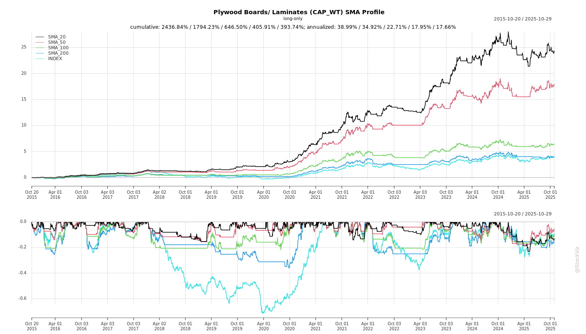
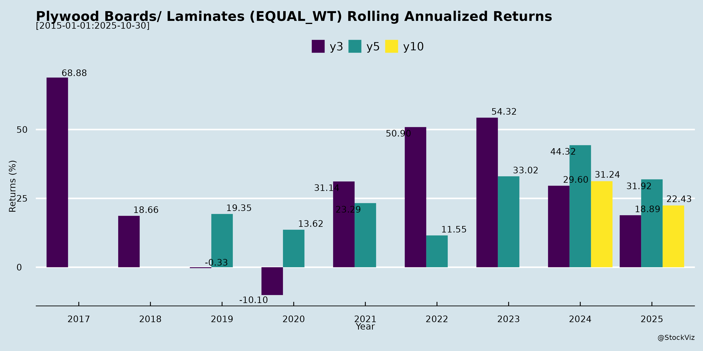

Plywood Boards/ Laminates
Industry Metrics
February 20, 2026
Annual Returns




Cumulative Returns and Drawdowns
SMA Scenarios


Current Distance from SMA
Rolling Returns


Market Cap
EBIT (% of Industry Total)
Revenue (% of Industry Total)
AI Summaries
Analyst
asof: 2025-11-30
Indian Plywood Boards & Laminates Sector Analysis
Based on Q2/H1 FY26 Earnings Transcripts (Century Plyboards, Greenlam, Stylam, Greenply, Greenpanel, Rushil Decor – covering Plywood, MDF/Particle Board, Laminates)
The sector demonstrates resilience and broad-based recovery post-disruptions (e.g., monsoons, plant issues), with organized players gaining from BIS norms and import curbs. Revenue growth (5-18% YoY) is driven by volumes (up 2-30% in key segments), premiumization, and efficiencies, though margins face near-term pressures. MDF/Particle Board shows strongest momentum (15-28% growth), Laminates steady (7-11%), Plywood mixed (3-16%). Overall FY26 guidance: high-teens volume growth in MDF, 10-16% EBITDA margins targeted in H2.
Tailwinds (Positive Drivers)
- BIS/QC Orders & Import Curbs: 80-95% drop in plywood/MDF imports (e.g., <1,000 CBM/month run-rate vs. 20,000 prior). Shift from unorganized/OEM imports to branded domestic (Century, Greenply, Greenpanel). Furniture QC expected Q1 FY27.
- Demand Recovery: Urbanization, real estate rebound, furniture OEM growth. Mid-value/premium segments strong (e.g., Century Plywood +16%, Greenlam Laminates +10%). No major monsoon drag in Q2.
- Premiumization & Mix Shift: Value-added products (45-56% share) boosting realizations (4-8% YoY). E.g., Century MDF 13.6% EBITDA; Rushil MDF 10.8%.
- Operational Efficiencies: Utilizations 70-96% (ramping to 80-100%+ in H2). Cost savings (5-6% margins from optimizations). Debt reduction (e.g., Greenlam -Rs50cr, Rushil 0.42x D/E).
- Capacity Ramp-Up: MDF debottlenecking (Century +15%), Laminates expansions (Greenlam +2M sheets), Jumbo Laminates (Rushil Phase 1/2). Particle Board new plants stabilizing.
- Branding/Distribution: Dealer additions (Rushil +10), campaigns (Greenply Ecotec/Green), loyalty apps (Greenpanel 13k engagements).
Headwinds (Challenges)
- Raw Material Volatility: Timber stable/softening (monsoon relief), but chemicals/resins elevated (1-2% margin hit; temporary, easing Q3/Q4). E.g., Century/Greenply MDF impacted.
- Pricing Pressures: No hikes expected near-term; selective corrections (2-4% YoY drop). Aggressive competition (undercutting in industrial grades).
- Export Headwinds: US tariffs (Greenlam absorbing 60%), logistics/geopolitics (Middle East; Rushil -23% YoY). Forex losses (Greenpanel Rs40cr H1 unrealized).
- Capacity Overhang: New unorganized/organized additions (Elixir, MS, Action Tesa); under-absorption during ramps (e.g., Greenply MDF 8.3% EBITDA).
- Demand Seasonality: Extended monsoons muted Q2; real estate degrowth noted.
- One-offs: Plant shutdowns (fire/resin; Rushil/Greenply), JV losses (Greenply Samet Rs11cr H1).
Growth Prospects
- Volume/Market Expansion: MDF/Particle Board 15-30% YoY (Century +28%, Greenpanel high-teens FY26). Laminates 7-11% (Stylam exports +20%). Plywood 3-16% (BIS tailwind).
- FY26 Guidance: Consolidated revenues Rs800-1,400cr (10-20% growth); EBITDA 10-16% (H2 rebound). E.g., Century Rs1,386cr Q2 (+17%); Rushil Rs970cr FY26.
- H2/FY27 Catalysts: 80-100%+ utilizations; Jumbo Laminates (Rushil Rs100-250cr); MDF expansions (Greenply Odisha); exports stabilization (Stylam 20%+ CAGR).
- Long-Term: Industry 15-20% (urbanization/furniture). Branded share gains (<10% currently; Century). New products (HCW, ThinMDF, Fire Retardant).
- Capex Plans: Rs100-260cr FY26 (debottlenecking, Odisha, PVC). MDF FY28 needs eyed.
| Segment | FY26 Volume Growth (Guided) | EBITDA Margin (H2 Target) |
|---|---|---|
| Plywood | 6-10% | 8-10% |
| MDF/Particle | 15-30% | 13-16% |
| Laminates | 7-11% | 9-18% |
Key Risks
| Risk | Impact | Mitigation |
|---|---|---|
| Overcapacity/Pricing Wars | Margin erosion (industrial grades undercut). | Premium focus; BIS enforcement. |
| RM Volatility | 1-2% EBITDA hit (resins/chemicals). | Agroforestry; backward integration. |
| Execution Delays | Ramps/JVs (e.g., particle board losses). | Proven track record; monitoring. |
| Export/Macro | Tariffs/FX (10-20% exposure). | Domestic bias; hedging. |
| Regulatory | BIS reversal/import surge. | Stricter norms incoming. |
| Demand Slowdown | Real estate/monsoon. | Diversification (furniture/OEM). |
Summary Outlook: Positive with H2 acceleration. Tailwinds from BIS/import curbs and premiumization outweigh headwinds (RM/pricing). Sector poised for 15%+ growth (MDF-led), margins stabilizing at 10-15%. Organized players (market share <10%) to capture unorganized shift. Risks skewed to competition/RM, but balance sheets healthy (low D/E). Watch H2 volumes/utilizations for confirmation.
Financial
asof: 2025-12-02
Summary Analysis: Indian Plywood Boards & Laminates Sector (Based on Q3/Nine Months FY25 Results of Key Players)
The analysis is derived from unaudited financial results of major listed players—Greenlam Industries (standalone/consolidated), Greenpanel Industries, Rushil Decor (standalone/consolidated), Archidply Industries (standalone/consolidated), Airo Lam (standalone/consolidated), Western India Plywoods (standalone/consolidated), and Archidply Decor—for the quarter and nine months ended Dec 31, 2024 (9M FY25). The sector shows modest revenue resilience amid profit compression, driven by stable domestic demand but pressured by costs. Laminates remain the strongest segment (~70-80% revenue contribution), while plywood/MDF often reports losses.
Key Financial Trends (9M FY25 Aggregate Across Companies)
| Metric | Standalone (₹ Cr) | YoY Change | Consolidated (₹ Cr) | YoY Change |
|---|---|---|---|---|
| Revenue | ~15,000+ | +4-6% (mixed; Greenpanel -9%, others +2-18%) | ~18,000+ | +5-7% |
| EBITDA | ~800-1,000 | -10-15% | ~900-1,100 | -8-12% |
| PAT | ~500-600 | -20-30% (sharp drops in Greenpanel, Airo Lam, Archidply) | ~600-700 | -15-25% |
| EPS (Basic) | ₹2-5 | Down | ₹2-6 | Down |
- Revenue: Flat-to-modest growth; laminates up (e.g., Rushil +8.5%), plywood weak.
- Margins: EBITDA margins ~8-12% (down from 10-15%); high material costs (40-50% of expenses).
- Balance Sheet: Debt/Equity 0.8-1.3x (stable-rising); capex via warrants/rights (Rushil, Greenlam expansions).
Headwinds (Challenges Impacting Performance)
- Cost Inflation & Margin Squeeze:
- Material costs (kraft paper, resins, timber) up 5-10% YoY; comprise 45-55% of expenses (e.g., Greenlam materials ₹912 Cr, +11%).
- Employee costs +10-15% (e.g., Greenpanel ₹1,061 Cr); finance costs stable but forex losses (Greenpanel negative finance cost reversal).
- EBITDA margins declined (e.g., Greenpanel PAT halved despite revenue dip).
- Demand Softness in Key Segments:
- Plywood losses persist (e.g., Greenlam -₹21 Cr, Rushil -₹1 Cr; capacity underutilization).
- Overall revenue muted (Greenpanel -9%, Archidply flat); inventory build-up (positive changes in some).
- External Pressures:
- Subsidy delays (Greenpanel deferred ₹2,087L power subsidy; legal opinion-based).
- Tax hits: Earlier-year taxes (Greenlam ₹3 Cr, others similar).
Tailwinds (Supportive Factors)
- Revenue Resilience & Laminates Strength:
- Laminates ~70-80% revenue, +5-10% YoY (e.g., Greenlam ₹1,651 Cr consolidated; Rushil ₹1,474 Cr).
- Total revenue up in 6/7 companies; exports via subsidiaries (Greenlam 14+ overseas entities).
- Capacity & Product Expansion:
- Greenlam: New Egypt/Spain subs; particle board production started Jan 2025 (292k CuM capacity).
- Rushil: Jumbo laminates/MDF capex (₹609 Cr warrants utilized ~50%).
- Airo Lam/Archidply: New overseas subs/holdings.
- Operational Efficiencies:
- Inventory reductions (negative changes, e.g., Greenlam -₹60 Cr consolidated).
- Other income steady (₹100-200 Cr aggregate; forex gains in some).
Growth Prospects (Medium-Term Outlook)
- Domestic Demand Boom (High Potential):
- Real estate/infra (PM Awas Yojana 2.0, RERA maturity) to drive +10-15% CAGR; modular kitchens/furniture shift from solid wood.
- Organized sector share <30%; rising to 50% by FY30 (brand premiumization).
- Capacity Ramp-Up & Diversification:
- New capacities (Greenlam particle board, Rushil MDF upgrades) to add 20-30% output.
- Exports (20-30% revenue for Greenlam/Rushil) via global subs (Asia/Europe/Africa).
- Sustainability Edge:
- Engineered wood (MDF/particle board) growth > plywood; green certifications (e.g., Greenlam’s new plants).
Projected Sector Growth: 12-15% CAGR FY25-28 (ICRA/McKinsey est.); top players target 15-20% via exports/capex.
Key Risks
| Risk Category | Description | Mitigation |
|---|---|---|
| Raw Material Volatility (High) | Timber/resins 40-50% costs; import dependency (e.g., Russian logs). Price spikes could erode 2-5% margins. | Backward integration (few players); hedging. |
| Demand Cyclicality (Medium) | Real estate slowdown (high inventory); unorganized competition (60% market). | Brand focus; exports buffer. |
| Competition/Imports (Medium) | Cheap Chinese imports; 100+ unlisted players. | Anti-dumping duties; localization. |
| Forex & Subsidy (Medium) | Export revenue exposed (10-20%); subsidy delays (Greenpanel ₹8,000L+). | Diversified markets; legal pursuits. |
| Regulatory/Execution (Low-Medium) | Timber sourcing bans; capex delays (e.g., Greenlam greenfield). | Compliance; phased expansions. |
| Liquidity (Low) | Debt rising (D/E 1.0-1.3x); working capital strain. | Strong FCF in leaders (Greenlam ₹1,000 Cr equity). |
Overall Sector Outlook: Neutral-Positive. Stable revenues with profit recovery expected in FY26 on cost normalization, realty upcycle, and expansions. Leaders (Greenlam, Rushil) outperform; laggards (Greenpanel, Airo Lam) face turnaround needs. Monitor Q4 for subsidy/inventory unwind. Investors: Favor laminate-heavy, export-oriented firms.
General
asof: 2025-11-30
Analysis of Indian Plywood Boards/Laminates Sector
Based on the provided announcements from key players (Century Plyboards, Greenlam Industries, Greenpanel Industries, Rushil Decor, Archidply, Stylam Industries, Airo Lam), the sector shows signs of operational momentum amid regulatory pressures. These filings highlight capacity expansions, high utilization, dividends, and AGM activities (FY25-focused), but also tax compliance issues. Below is a structured analysis of headwinds, tailwinds, growth prospects, and key risks, followed by a summary.
Headwinds (Challenges Pressuring the Sector)
- Regulatory and Tax Scrutiny: Greenpanel Industries deposited ₹4.8 Cr (₹3 Cr IGST + ₹1.36 Cr interest + ₹0.43 Cr penalty) voluntarily on Sep 29, 2025, following DGGI searches (Meerut Zonal Unit) for ineligible input tax credit disallowance (FY20-25). This signals heightened GST enforcement, potentially leading to cash outflows and disputes across the sector.
- Administrative Burdens: Multiple companies (Century Ply, Airo Lam) are mailing physical AGM notices/annual reports to shareholders without registered emails, indicating incomplete KYC/email compliance (per SEBI Reg 36). Stylam updated RTA contacts, reflecting ongoing compliance hassles.
- High Utilization Without Immediate Relief: Greenlam’s 96% capacity utilization (group-level) points to supply constraints, but expansions are phased (e.g., Q4 FY27 completion), delaying relief.
Tailwinds (Supportive Factors)
- Strong Demand Indicators: Greenlam’s brownfield expansion (2 Mn sheets/annum at ₹70 Cr investment, internal accruals) cites “growing demands in domestic/global markets.” Rushil’s Phase 2 trial production (1.6 Mn jumbo sheets/annum) builds on Phase 1, signaling robust order books.
- Shareholder Returns: Century Ply declared ₹1/share final dividend (record date Sep 11, 2025), supporting investor confidence amid steady operations.
- Governance Stability: Archidply approved a 5-year secretarial auditor (Rajneesh Sharma & Co.) at its Aug 26, 2025 AGM, ensuring compliance continuity.
Growth Prospects
Capacity Expansion Momentum: | Company | Expansion Details | Capacity Add’l | Timeline/Investment | |—————|————————————|—————-|———————| | Greenlam | Brownfield laminates (Naidupeta) | 2 Mn sheets/annum | Q4 FY27 / ₹70 Cr | | Rushil Decor | Jumbo laminates Phase 2 (Gujarat) | 1.6 Mn sheets/annum | Trial run started Oct 2025 |
These target premium/jumbo products, aligning with real estate/furniture growth (domestic + exports).
High Base Utilization: Greenlam’s 24.52 Mn sheets existing capacity at 96% use (Q2 FY26) justifies expansions, with potential for 10-15% sector-wide volume growth if demand sustains.
Digital/Compliance Push: Web-links/QR codes for AGMs (Century, Airo Lam) and KYC reminders indicate modernization, aiding investor access and e-voting (e.g., Century’s Sep 13-17 window).
Overall Outlook: Sector poised for mid-teens growth via brownfield/greenfield projects, driven by housing boom (though not explicitly stated, inferred from demand cites).
Key Risks
| Risk Category | Details from Docs | Potential Impact |
|---|---|---|
| Tax/Regulatory | DGGI probes (Greenpanel); voluntary payments signal ITC disallowance risks. | Cash drain (₹4.8 Cr case); litigation. |
| Execution Delays | Phased expansions (Rushil Phase 2 trial; Greenlam Q4 FY27) amid high utilization. | Margin pressure if demand unmet. |
| Compliance Gaps | Unregistered emails/KYC (multiple cos.); RTA changes (Stylam). | Delayed dividends; SEBI penalties. |
| Financial | Internal accruals financing (Greenlam); dividend payouts (Century). | Liquidity strain if GST escalates. |
| Market | Not directly stated, but high utilization implies raw material volatility risk. | Cost inflation (wood/resins). |
Summary
The Indian plywood/laminates sector exhibits resilient growth tailwinds from capacity additions (Greenlam, Rushil) amid ~96% utilization and product innovation (jumbo sheets), positioning it for 10-20% volume expansion by FY27, fueled by domestic real estate and exports. Dividends and governance updates (AGMs, auditors) bolster stability. However, headwinds from GST scrutiny (e.g., Greenpanel’s ₹4.8 Cr payout) pose material risks, potentially eroding 1-2% of profits for vulnerable players via penalties/interest. Key watch: Regulatory overhang could cap upside unless resolved; monitor Q3 FY26 earnings for expansion ramps and tax updates. Overall, positive bias for leaders like Greenlam/Rushil, but sector beta remains elevated due to compliance/tax risks. Investors should prioritize KYC-compliant firms with strong balance sheets.
Investor
asof: 2025-11-30
Analysis of Indian Plywood Boards/Laminates Sector
The Indian plywood boards and laminates sector (including plywood, MDF, particle board, and laminates) is experiencing a mix of structural positives and cyclical challenges, as evidenced by Q2/H1 FY26 earnings from key players like Century Plyboards, Greenlam, Stylam Industries, Greenply, Greenpanel, and Rushil Decor. The sector benefits from rising urbanization, real estate recovery, and a shift to organized players, but faces headwinds from raw material volatility and competition. Below is a structured analysis of headwinds, tailwinds, growth prospects, and key risks, followed by a summary.
Headwinds (Challenges Pressuring Margins and Volumes)
- Raw Material Cost Pressures: Timber shortages (e.g., floods in North India - Century Ply), elevated chemical/resin prices (methanol, formaldehyde, urea - Greenply, Greenpanel, Rushil), and global freight/commodity linkages are squeezing margins. MDF EBITDA margins dipped to 8-13% (Century 13.6%, Greenply 8.3%, Greenpanel 10.2% adjusted), with 100-150 bps impact noted in Q2.
- Competitive Pricing and Overcapacity: Aggressive undercutting in MDF/industrial grades (Greenply, Greenpanel), leading to realization declines (4-7% YoY in some cases). New unorganized/organized capacities (Elixir, Action Tesa - Rushil) risk further pressure.
- Demand Softness: Extended monsoons delayed construction (Century), residential real estate degrowth (Greenply), and weak Q3/Q4 FY25 base effects limit volumes (Greenpanel domestic MDF +30% YoY but export flat).
- Export Headwinds: US tariffs (Rushil), Middle East geopolitics (Greenpanel), logistics delays, and forex volatility (Greenpanel Euro debt MTM loss ~INR40 Cr H1).
- Operational Disruptions: Plant shutdowns/expansions (Greenply MDF, Rushil fire incident), ramp-up fixed costs (Greenlam chipboard losses), leading to one-off margin hits.
Tailwinds (Supportive Factors Driving Resilience)
- BIS/QC Norms and Import Curbs: Reduced imports by 80-95% (Century, Greenply, Greenpanel <1,000 CBM/month vs. 20,000 prior), benefiting organized players. Shift from unorganized/OEM imports to branded domestic supply.
- Strong Brand/Distribution: Premiumization (Century laminates 9.5% EBITDA, Rushil value-added 56% value mix), dealer expansions (Rushil +10 distributors), and marketing (Greenply Ecotec campaigns) drive realizations (+3-8% YoY in laminates/plywood).
- Stable/Softening Timber: Sequential softening (Century South, Greenpanel), aiding plywood margins (Century 14.2%).
- Capacity Utilization Recovery: MDF at 70-85% (Century, Greenply post-expansion), laminates 80-96% (Greenlam), enabling operating leverage.
- Government Incentives: EPCG benefits (Greenpanel INR11 Cr H1), subsidies (Rushil INR114 Mn), supporting capex/debt reduction (Century net debt down).
Growth Prospects (Medium-Term Opportunities)
- Industry Tailwinds: 15-20% MDF growth (Century), positive building materials outlook from urbanization/housing (all cos.). Domestic demand strong (Century H1 rev +16.7% YoY).
- Capacity Expansions: MDF debottlenecking (Century South +25%, H1 FY27), plywood/chipboard ramps (Greenlam Naidupeta), Jumbo laminates (Rushil Phase 2 trials). Greenply Odisha plant, Greenpanel high-teens domestic volumes.
- Segment-Specific: Laminates premium/export focus (Greenlam +10% YoY, Stylam exports robust), MDF value-added (Rushil 45% qty/56% value), new categories (Greenply HDF flooring Dec’25, furniture JVs INR100 Cr FY27 target).
- Revenue Guidance: Century H1 rev record INR1,386 Cr (+17%), full-year growth sustained; Rushil FY26 INR970 Cr; Greenpanel high-teens MDF volumes.
- EBITDA Targets: MDF 14-16% H2 (Century/Greenply/Greenpanel), plywood 8-10% (Century/Greenply), overall 10-12% (Rushil).
Key Risks
- Raw Material Volatility: Timber/chemical spikes (e.g., resins +1-1.5% margin hit - Rushil) could erode 100-200 bps EBITDA if prolonged.
- Pricing/Competition Pressure: MDF overcapacity, unorganized entry risks sustained low realizations (no hikes foreseen short-term).
- Execution Delays: New plant ramps (Greenlam chipboard losses, Rushil Jumbo Q3 30-40% util.), fires/shutdowns (Rushil Q1).
- Export/Macro Risks: Tariffs/geopolitics (5-20% rev exposure), real estate slowdown, monsoon impacts.
- Forex/Debt: MTM losses (Greenpanel INR40 Cr H1), high capex (Greenply INR160 Cr FY26) amid net debt (Century INR510 Cr).
- Regulatory: BIS enforcement weakening could revive imports; anti-dumping (Greenply acrylic).
Summary
The sector is in a recovery phase post-import curbs (BIS tailwind), with organized players like Century/Greenlam gaining share via brands/capacity (H1 rev growth 5-17%). Tailwinds (BIS, premiumization, demand) outweigh headwinds (RM costs, competition), supporting 10-20% volume growth and 10-14% EBITDA margins FY26/H2. Prospects are strong (urbanization, expansions to FY27+), targeting INR1,000+ Cr revs/company. Risks center on RM volatility/competition (monitor MDF pricing), but balanced sheets (low D/E) and forex hedges mitigate. Overall positive outlook with 12-15% sector CAGR feasible, favoring branded incumbents.
| Aspect | Key Metrics (H1 FY26 Avg.) | Outlook |
|---|---|---|
| Revenue Growth | 5-17% YoY | High-teens FY26 |
| EBITDA Margin | 8-13% | 10-16% H2 |
| Volumes | MDF +15-30%; Laminates +7-10% | 10-20% FY26 |
| Capex | INR100-260 Cr/company | FY27 expansions |
Meeting
asof: 2025-11-30
Summary Analysis: Indian Plywood Boards & Laminates Sector (Based on Q2/H1 FY26 Results from Key Players)
The analysis is derived from unaudited financial results (Q2/H1 ending Sep 2025) of major listed players: Century Plyboards (postal ballot context), Greenlam Industries, Greenpanel Industries, Rushil Decor, Airo Lam, Western India Plywoods (WIPL), Archidply Decor, Stylam Industries (AGM), Greenply (postal ballot), etc. Sector shows resilient revenue amid profitability pressures, driven by domestic demand but hit by external shocks. Laminates dominate revenue (60-80% in most), with plywood/MDF secondary.
Headwinds (Challenges Pressuring Margins)
- Forex Volatility & High Finance Costs: Widespread ECB (Euro-denominated) borrowings led to significant losses (e.g., Greenlam: ₹8 Cr Q2 forex loss; Greenpanel: ₹40 Cr H1; Rushil: ₹74 Cr H1). Finance costs up 20-50% YoY (Greenpanel: ₹20 Cr H1; Airo Lam: ₹42 Cr H1).
- Input Cost Inflation & Operational Disruptions: Raw material costs (60-70% of revenue) rose; inventory changes volatile. Incidents like Rushil’s Q1 fire disrupted production. GST scrutiny (Greenpanel deposited ₹48 Cr).
- Subdued Profitability: Consolidated PAT mixed/declining (Greenlam down 70% H1; Greenpanel H1 loss ₹41 Cr; Archidply near-flat). EBITDA margins compressed 200-500 bps YoY due to forex/depreciation.
- Segment Weakness: Plywood/MDF loss-making in some (Greenlam Plywood: -1% margin; Rushil MDF volatile).
Tailwinds (Supportive Factors)
- Revenue Resilience/Growth: Standalone topline up 5-15% YoY H1 (Greenlam: +9%; Airo Lam: +13%; Rushil: flat but Q2 +2%). Laminates strong (Greenlam: +7% H1).
- Capacity Expansions: Rushil’s jumbo laminates Phase II (2.8 Mn sheets/annum); govt incentives received (Rushil: ₹114 Cr Andhra Pradesh subsidies).
- Cost Controls: Declining inventories aided margins (Greenlam: -₹22 Cr H1 inventory gain). Employee costs stable.
- Governance Stability: Postal ballots/AGMs passed (Century: new ID; Stylam/Greenply approvals).
Growth Prospects
- Demand Tailwinds: Housing/infra boom; domestic market penetration (80% revenue). Exports via subsidiaries (Rushil Singapore/Malaysia; WIPL JV).
- Expansion Plans: New capacities (Rushil jumbo/MDF upgrades); product diversification (clads, panels). Incentives/subsidies unlocking (Greenpanel ₹81 Cr expected).
- Outlook: FY26 revenue growth 10-15% possible on capacity; PAT recovery if forex stabilizes (INR-EUR at ₹104+). Sector FY25 revenue ~₹40,000 Cr; 8-10% CAGR projected to FY28 on urbanization.
- M&A/Structuring: Dilutions (Rushil subsidiary stake cut); warrants conversions (Rushil ₹93 Cr raised).
Key Risks
| Risk Category | Description | Impact (Examples) | Mitigation |
|---|---|---|---|
| Currency/Debt | INR depreciation vs. Euro/USD (ECB heavy). High leverage (D/E 1-1.2x). | PAT erosion 20-50% (Greenpanel/Rushil). | Hedging; debt repayment (WIPL -14% borrowings). |
| Regulatory | GST probes, subsidy delays. | Cash outflows (Greenpanel ₹48 Cr). | Compliance; legal opinions. |
| Operational | Raw material volatility (wood/resins); disruptions. | Margin volatility (10-15% EBITDA swing). | Inventory mgmt; insurance. |
| Market | Competition from unorganized; demand slowdown. | Revenue flat in plywood (Rushil -ve). | Capacity/utilization ramp-up. |
| Liquidity | Working capital strain (receivables 90-120 days). | Current ratio ~1.3x. | Cash positives (WIPL +₹43 Cr ops cash). |
Overall Sector View: Neutral-Positive. Revenue stable (5-10% H1 growth), but forex/regulatory headwinds cap PAT (flat/decline). Tailwinds from expansions/infra could drive 10%+ FY26 growth if INR stabilizes. Monitor debt & forex closely. Investors: Favor low-debt players (WIPL/Airo Lam).
(Data aggregated; individual cos vary. FY26 assumes no major shocks.)
Press Release
asof: 2025-11-30
Indian Plywood Boards/Laminates Sector Analysis (Based on Q2/H1 FY26 Results of Greenlam, Greenply, and Rushil Decor)
Tailwinds
- Strong Revenue Momentum: Greenlam led with 18.7% YoY Q2 growth (₹808 Cr) and 15.3% H1 growth (₹1,482 Cr), driven by laminates (10.2% value/7.4% volume) and plywood/allied (22.2% value). Greenply saw 7.5% Q2 (₹689 Cr) and 5.3% H1 growth, with plywood volumes +7.2% and MDF +16.1%. Rushil modest +2.3% Q2 (₹236 Cr), led by laminates (+8.9%).
- Operational Improvements: EBITDA growth (Greenlam +32.3% Q2 pre-forex), margin expansion (Greenlam gross margins +300 bps to 54.6%), working capital optimization (Greenlam -12 days to 47 days), and capacity utilization recovery (Rushil MDF 79%, laminates 90%).
- Demand Recovery: Broad-based across domestic/international; plywood demand rebound (Greenply), export traction (Greenlam international-led, Rushil new orders from Russia/UAE etc.), and value-added products (Rushil 45% MDF volume share).
- Product Diversification: Plywood (+51.6% Greenlam), MDF ramp-up (Greenply +13.8% H1 revenue), and new segments like chipboard (Greenlam +54% QoQ) gaining traction.
Headwinds
- Profitability Pressure: Net profit declines—Greenlam Q2 -7.7% (₹32 Cr), H1 -70.4% (₹16 Cr); Rushil Q2 -55% (₹5 Cr); Greenply stable but MDF losses (₹-4 Cr Q2). Driven by forex losses, higher depreciation/interest from expansions.
- Volume/Margin Challenges: MDF volumes down (Rushil -11.8% YoY), realizations mixed (Greenply plywood -3.5%, Rushil gross margins -340 bps to 44.9%). EBITDA margins compressed (Rushil -340 bps to 9.5%, Greenply MDF 8.3% vs. 11.8%).
- External Costs: Elevated resin prices, global trade disruptions (Rushil), and forex volatility impacting all players.
- One-off Disruptions: Rushil’s earlier fire incident affected MDF recovery; Greenply MDF shutdown for expansion.
Growth Prospects
- H2 Acceleration: Greenply eyes double-digit plywood volumes and MDF margin rebound (>10%); Greenlam highest-ever revenues signal sustained momentum; Rushil Jumbo laminates Phase 1/2 ramp-up for premium exports.
- Capacity & Export Expansion: New facilities (Greenlam chipboard/plywood, Greenply MDF to 1,000 CBM/day, Rushil Jumbo unit) to boost utilization. Exports strong (Greenlam international-led growth, Rushil to 57+ countries).
- Domestic Tailwinds: Retail/OEM demand recovery, network expansion (Rushil +10 distributors/+40 dealers), and sustainability focus (FSC/PEFC certifications, agroforestry).
- Margin Upside: Better product mix, cost discipline, and stable RM prices could drive EBITDA >10-13% (seen in Greenlam pre-forex).
Key Risks
- Forex & Cost Volatility: Recurrent forex losses; rising resin/input costs amid global trade tensions.
- Debt & Capex Burden: Higher interest/depreciation from expansions (Greenlam net debt ₹995 Cr); execution risks in ramp-ups.
- Demand Fluctuations: Weak volumes in MDF/plywood if recovery stalls; competition in organized segment.
- Operational/Geopolitical: Capacity underutilization (e.g., post-disruptions), export dependencies (e.g., Rushil new markets), and monsoon/rural slowdowns.
- Macro: Inflation, interest rates, and slowing real estate/infra could cap growth.
Overall Summary: Sector shows resilient revenue growth (avg. ~10% YoY) amid demand recovery and expansions, but profitability lags due to forex/capex headwinds. H2 prospects bright with capacity leverage and exports, though forex/RM risks warrant caution. Greenlam outperforms on scale/diversification; Greenply/Rushil focus on plywood/MDF recovery. Positive outlook for organized players with strong balance sheets.
Copyright © 2023 SAS Data Analytics Pvt. Ltd. All rights reserved.